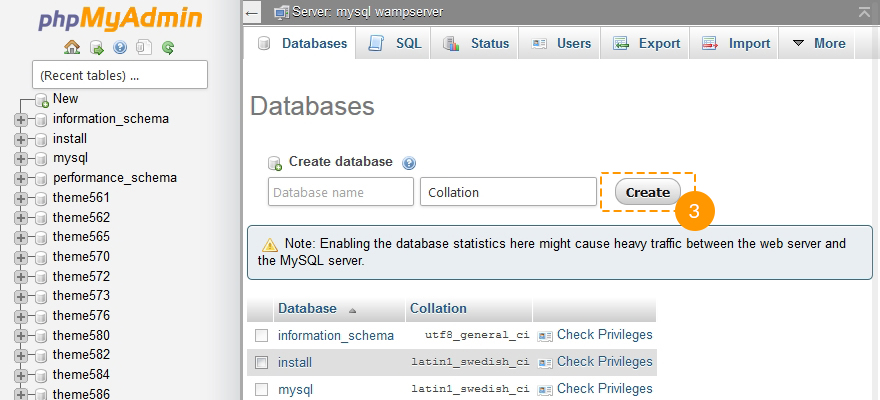

Introdución Lo qué puedes encontrar en este paquete y cómo utilizarlo
Gracias por comprar una plantilla de OpenCart. Este manual consta de varias partes que muestran todo el proceso de la creación y gestión de un sitio de OpenCart desde cero. Hemos hecho todo lo posible para que este manual sea claro y fácil de seguir.
¿Qué es OpenCart?
OpenCart es una plataforma de comercio electrónico de código abierto para vendedores en línea. OpenCart proporciona unos fundamentos profesionales y confiables para la construcción de una tienda en línea con éxito. Esta fundación hace un llamamiento a una amplia variedad de usuarios, desde desarrolladores web que buscan una interfaz fácil de usar para hacer compras a los propietarios que por primera vez lanzan su negocio en línea. OpenCart tiene una gran cantidad de características que le dan un control total sobre la personalización de su tienda. Con las herramientas de OpenCart usted puede hacer su tienda en línea a la altura de su potencial. Leer más
Estructura de los archivos
Los siguientes elementos se incluyen en el paquete de la plantilla:
- documentation - contiene un manual detallado sobre la plantilla y la instalación del motor;
- documentation.html - el archivo de la documentación principal. Es donde estás ahora :)
- screenshots - contiene capturas de pantalla del tema;
- sources - contiene el archivo fuente de Adobe Photoshop;
- themeXXX - contiene:
- themeXXX(full).zip - el archivo que contiene el motor de OpenCart, la plantilla y los datos de ejemplo (destinado para realizar una instalación limpia);
- themeXXX(update).zip - el archivo que contiene la plantilla sin datos de ejemplo (para realizar la instalación sobre una tienda existente);
- themeXXX(extensions).zip - el archivo que contiene XML presentar;
- unzip.php - el archivo que se utiliza para extraer los archivos del paquete full/update.zip cuando fue cargado en el servidor de alojamiento.
- info.txt - contiene información sobre el archivo;
- fonts_info.txt - contiene información sobre los tipos de letra (fuentes) utilizadas en la plantilla.
Preparación Lo que hay que hacer que esto funcione
Para que funcione una tienda de OpenCart es necesario hacer algunos preparativos.
Software de edición
Para sentirse cómodo trabajando con un tema de OpenCart, recomendamos la descarga de todas las aplicaciones necesarias. Puede ver la lista de software necesario en la página de vista previa de la plantilla.
Los requisitos pueden variar de una plantilla a otra de modo que aquí le diremos lo que se necesita, en terminos generales:
- Es posible que necesite la aplicación Adobe Photoshop. Se utiliza para editar archivos .PSD y sin duda lo necesitará si desea editar el diseño de gráficos e imágenes de la plantilla.
- Para editar los archivos de código fuente de la plantilla, necesitará algún editor de texto como Adobe Dreamweaver, Notepad++, Sublime Text, etc.
- Para subir archivos al servidor de alojamiento, es posible que necesite un administrador de FTP como FileZilla, CuteFTP, etc.
- Por favor, consulte los siguientes tutoriales sobre cómo extraer los archivos de ficheros comprimidos con WinZip(PC) y StuffitExpander(MAC).
Alojamiento (Hosting)
Como OpenCart es una aplicación basada en PHP/MySQL, es necesario preparar un entorno de alojamiento para ejecutar OpenCart.
Si usted tiene un hosting en línea, por favor asegúrese de que corresponde Requisitos del sistema y está listo para ser utilizado por los sitios web de OpenCart.
También puede ejecutar OpenCart en su ordenador utilizando un servidor local. Para crear un servidor de alojamiento local, utilice aplicaciones de localhost como WAMP, AppServ, MAMP, etc. Cualquiera de ellos puede ser instalado fácilmente como cualquier otro programa y se utiliza para ejecutar OpenCart.
Por favor, consulte los tutoriales a continuación sobre cómo configurar un entorno de desarrollo local:
Primeros Pasos Qué hay que hacer para que esto funcione
Instalación completa
Esta opción de instalación se utiliza si usted no tiene ninguna instalación de OpenCart en su servidor. El archivo 'themeXXX(full).zip' utilizado en esta guía contiene el motor de OpenCart y el tema con datos de ejemplo, por lo que no tiene que cargar el motor de OpenCart por separado. Los datos de muestra harán que su sitio web de OpenCart aparezca igual que en la página de la vista previa de la plantilla, con todos los productos de ejemplo, los módulos y el sitio de prueba instalado.
Instalación de la actualización
Utilice esta opción si ya tiene un sitio web de OpenCart y sólo quiere cambiar su apariencia mediante la instalación de un nuevo tema.
Instalación completa
El método de instalación completo se puede utilizar si desea crear un sitio web de OpenCart desde cero. Suponemos que usted ya ha terminado todos los pasos de preparación y ya tiene todo lo necesario.
Creación de una base de datos
Cuando haya terminado de subir los archivos al servidor de hosting, usted puede crear una nueva base de datos para su sitio web de OpenCart. Puede crear la base de datos utilizando la herramienta de gestión de base de datos desde el panel de control del hosting (normalmente PhpMyAdmin).
Con la herramienta phpMyAdmin usted será capaz de crear una nueva base de datos en 3 sencillos pasos (vea las siguientes diapositivas):
- Haga clic en el botón Bases de datos en el menú de navegación superior para acceder a la lista de bases de datos.
- Introduzca el nombre de la base de datos en el campo "Crear nueva base de datos".
- Haga clic en el botón Crear que se encuentra a la derecha.
Ahora puede ver la base de datos en la lista de base de datos. Haga clic en su nombre para acceder a la base de datos.
-

1. Haga clic en el botón Bases de datos para acceder a la lista de bases de datos.
-

2. Introduzca el nombre de la base de datos.
3. Haga clic en el botón Crear. -

4. Ahora puede ver la base de datos en la lista de base de datos. Haga clic en su nombre para acceder a la base de datos.
También puede consultar un video tutorial detallado sobre Cómo crear una base de datos.
Si usted tiene algún problema con la creación de una base de datos, por favor póngase en contacto con su proveedor de alojamiento para obtener ayuda y asistencia.
Subir los archivos y descomprimirlos
Para empezar a trabajar con OpenCart necesita subir archivos a su servidor de alojamiento. Puede hacerlo utilizando el administrador de archivos del alojamiento o utilizando algún gestor de FTP de terceros.
- Abra la carpeta del paquete de la plantilla.
- Elija los archivos 'unzip.php' y 'themeXXX(full).zip' y súbalos a su servidor ( Cómo subir archivos a un servidor, Cómo subir archivos a un servidor utilizando cPanel (WebHost Manager, WHM)).
- Escriba la ruta de acceso al archivo 'unzip.php' en su servidor (http://your_domain_name/unzip.php) en su navegador.
- Deberías ver la siguiente pantalla:

Fig 1. Pantalla inicial de unzip.php.
- En el cuadro de selección 'Elija el archivo zip', seleccione el archivo 'themeXXX(full).zip' subido.
- En el campo 'Unzip to', especifique el directorio donde desea extraer los archivos.
- Haga clic en el botón "Unzip" para comenzar la extracción.
Por favor, asegúrese de establecer los permisos correctos para el directorio donde se van a extraer los archivos. Los permisos deberían ser CHMOD 755 o 777 dependiendo de la configuración del servidor.
Instalación de OpenCart
Abra su navegador y escriba la ruta de acceso al directorio de OpenCart en la barra de direcciones (p.e. http://your_domain_name/opencart). Debería ver la pantalla inicial de instalación de OpenCart:
Paso de instalación 1 Licencia

Fig 1. Instalación de OpenCart. Paso 1. Licencia
Por favor, consulte la licencia de OpenCart y si está de acuerdo con sus términos, marque la casilla Estoy de acuerdo con la licencia y haga clic en el botón Continuar.
Paso 2 Pre-Instalación

Fig 3. Instalación de OpenCart. Paso 2. Pre-Instalación
En este paso, el motor de OpenCart comprueba su servidor de alojamiento: si su configuración cumple los requisitos de OpenCart y si los permisos de los directorios se han establecido correctamente.
Por favor, asegúrese de configurar los permisos correctos para los directorios del motor de OpenCart como se describe a continuación:
- chmod 0755 o 0777 image/
- chmod 0755 o 0777 image/cache/
- chmod 0755 o 0777 image/data/
- chmod 0755 o 0777 system/cache/
- chmod 0755 o 0777 system/logs/
- chmod 0755 o 0777 download/
- chmod 0755 o 0777 config.php
- chmod 0755 o 0777 admin/config.php.
Paso 3 Configuración

Fig 4. Instalación de OpenCart. Paso 3. Configuración
En esta etapa, tiene que introducir los detalles de conexión de la base de datos. Como recordará, en la etapa de preparación usted creó una base de datos de MySQL, así que ahora tiene que introducir el
- nombre del servidor de base de la datos
- nombre de la base de datos
- usuario de la base de datos
- contraseña del usuario de la base de datos.
Si tiene dificultades para obtener estos datos, por favor póngase en contacto con su proveedor de alojamiento.
También es necesario crear una cuenta de administrador de la tienda. Introduzca el nombre de usuario de administrador, su contraseña y su correo electrónico. Estos datos serán utilizados para acceder al panel de administración de OpenCart para administrar su tienda.
Paso 4 ¡Ya está!

Fig 5. Instalación de OpenCart. Paso 4. ¡Ya está!
Este es el último paso de la instalación del motor de OpenCart. Usted tiene dos opciones: visitar el front-end (interfaz) de OpenCart, su sitio web de comercio electrónico o el back-end (motor) de OpenCart, el panel de administración.
Puede consultar un tutorial de instalación: OpenCart. Cómo instalar el motor de OpenCart y una plantilla (utilizando “fullpackage”) .
Por favor, asegúrese de eliminar el directorio "install" de su servidor de alojamiento. Usted no será capaz de acceder a su tienda mientras exista esta carpeta en el servidor.
Los siguientes archivos necesitan configurar sus permisos a 644 o 444 para prevenir que puedan ser editarlos:
- config.php
- index.php
- admin/config.php
- admin/index.php
- system/startup.php.
La instalación está terminada. Para acceder al front-end (interfaz) de la tienda, escriba your_domain_name en la barra de direcciones del navegador web. Para acceder al panel de administración de OpenCart, escriba your_domain_name/admin.
Instalación de la actualización
Por favor, asegúrese de que su versión del motor de OpenCart coincide con los requisitos de la plantilla. Todas las versiones de OpenCart están disponibles en la página web oficial de OpenCart.
- Para instalar una plantilla de OpenCart necesita subir sus archivos a su servidor de alojamiento. En el paquete de la plantilla OpenCart, encuentre el archivo "themeXXX(update).zip" y súbalo a la raíz de su intalación de OpenCart.
No dude en revisar el tutorial donde se detalla cómo cargar archivos en el servidor de alojamiento.
Los archivos de plantilla nunca no dañarán su tienda. - Una vez hecho, por favor, suba el archivo unzip.php desde el paquete de la plantilla al servidor, en el mismo directorio que el archivo anterior.
- Tan pronto como termine, por favor, abra su sitio en el navegador y añada el nombre de archivo - unzip.php a la dirección URL. Debería ser algo como: yourwebsite.com/unzip.php.
- En el cuadro de selección "Choose your zip file", por favor, elija themeXXX(update).zip y haga clic en "Unzip." Comenzará la descompresión de los archivos en el servidor en el mismo directorio. Esto tardará un poco.
- Escriba yourwebsite.com/install/ en la barra de direcciones de su navegador.
- Después de esto, por favor, siga las instrucciones de instalación que aparecen en la pantalla.
Puede consultar un tutorial de instalación: OpenCart. Cómo instalar una plantilla sobre una tienda existente (utilizando “update” package).
Configurar extensiones
Chat de Olark
Para configurar un chat en vivo como el de la demostración, tendrá que registrarse en el sitio web oficial Olark registration. Después de proporcionar todos los datos necesarios, usted recibirá un código para agregar a catalog\view\theme\themeXXX\template\common\footer.tpl antes de la etiqueta </body>.
Política sobre Cookies
Siguiendo los requisitos de la Ley de Cookies es necesario agregar los módulos adecuados a su sitio web. El módulo mostrará un mensaje de advertencia acerca de las cookies que se utilizan en su sitio web. Usted puede utilizar el siguiente:
Información útildónde obtener ayuda, apoyo e información adicional
OpenCart es una agradable solución de comercio electrónico multifuncional, ligero y con un aspecto atractivo para el usuario. Es una solución perfecta para su tienda en línea. El paquete por defecto contiene todos los módulos y extensiones necesarias para obtener el éxito con sus ventas. El código fuente abierto ofrece posibilidades realmente excepcionales para sus clientes.
Información adicional:
Validation
Las etiquetas HTML y estilos CSS utilizados en nuestras plantillas son semбnticamente correctos y vбlidos. Sin embargo, algunos errores del W3C pueden presentarse. Si el cуdigo es 100% W3C se elimina el uso de tecnologнas modernos como CSS3 y HTML5. Nuestro objetivo es entregar una amplia experiencia de usuario con plantillas de alta calidad y, a veces tenemos que romper algunas reglas.